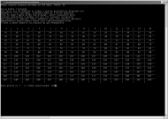

Gra w statki mojego autorstwa napisana w jezyku C na zaliczenie z pewngo przedmiotu. Uruchamiana jest w wierszu poleceń. Gra skierowana jest dla jednej osoby, niestety zabrakło czasu na jej rozbudowę. Gracz po jej uruchomieniu może wybrać rozmiar planszy na której będzie odbywała się zabawa. Do wyboru jest plansza w przedziale od 10x10 do 26x26. Ograniczenie górnej granicy podyktowane było ilością liter jaka znajduje się w alfabecie j. ang. Następnie komputer buduje statki na planszy zgodnie z zasadami gry tzn. każdy ze statków musi być zbudowany w linii poziomej bądź pionowej i nie może stykać się masztem(-ami). Ilość statków zależy od wielkości planszy jaką gracz sobie wybrał. Oczywiście po zapełnieniu planszy statkami komputer informuje gracza o ilości i rodzajach statków. Po tym jak wyżej opisany proces zakończy się rozpoczyna się właściwa zabawa. Gracz oddaje strzał za pomocą dwóch współrzędnych, jedną reprezentującą oś opisaną liczbami i drugą opisaną literami. Jeżeli ostrzeliwane pole okaże się pudłem, komputer podaje odpowiednią inforamcję, odświeża planszę i stawia w to miejsce kropkę, jeżeli trafi stawiany jest symbol "x" i podawa odpowiedni komunikat (wraz z informacją czy statek został zatopiony). Gra kończy się w momencie zatopienia wszystkich masztów.
Grę w kółko i krzyżyk napisałem w celu "rozwoju własnej edukacji(?)". W swoim wywodzie zakładam iż znajomość zasad gry jest znana tobie drogi czytelniku. Skupię się jedynie na opisaniu subtelnych różnic mojej wersji kodu względem pierwowzoru. Mianowicie gracz/gracze mają możliwość wpływu na wielkość planszy. Minimum to standardowy rozmiar 3x3 natomiast maksimum ograniczyłem do wielkości 14x14, kod można w łatwy sposób zmodyfikować i powiększyć maks. rozmiar, tak jak można powiększyć ilość kółek bądź krzyżyków jaką trzeba zbudować w linii poziomej, pionowej oraz po ukosie potrzebną do wygrania partii. Jedyną trudnością na jaką napotkałem było napisanie funkcji sprawdzającej wygraną po liniach ukośnych, jeżeli zrobiłem to poprawnie to żaden z graczy nie będzie mógł oszukać mojego kodu. Na koniec dodam iż kod tak jak przy poprzedniej grze napisany był w języku C.